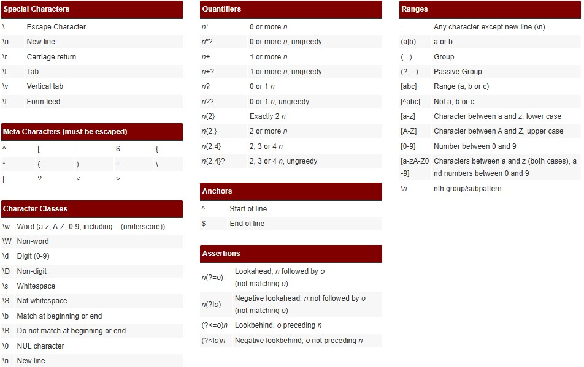

Python pour la data science
TD 4 - API et webscrapping
Intro
- API: Application Programming Interface: infrastructure dédiée pour permettre d’accéder à de la donnée de façon programmatique ==> légal, encadré, documenté.
- Webscrapping: technique de reproduction de comportements humains (requêtes, copier, coller) pour automatiser un recueil de données.
💡Les API sont à privilégier dès que c’est possible!
API
- Gratuites ou payantes
- En général, nécessité de création de compte
- Structure habituelle:
- URL racine de l’API (“root”): (ex:
https://api-adresse.data.gouv.fr) - Point d’entrée pour la tâche demandée (“End point”): (ex:
search) - Clé de requête (en général
?q=) - Paramètres de requête définis dans la documentation de l’API (ex:
5 +Av.+Le+Chatelier&postcode=91120)
- URL racine de l’API (“root”): (ex:
Exemple dans la base adresse nationale:
\[ \underbrace{{https://api-adresse.data.gouv.fr}}_{Point d’entrée (root)}/ \underbrace{search}_{end point}/ \underbrace{{?q=}}_{Clé} \underbrace{{5 +Av.+Le+Chatelier}}_{Valeurs de requête} \]
==> Retourne en général un objet JSON
Application
import requests # pour lancer une requête web (module natif)
import pandas as pd # pour stocker et manipuler les données requêtées
# # Exemple avec l’API BAN:
root = 'https://api-adresse.data.gouv.fr/'
endpoint = 'search/'
key = '?q='
address = '8+bd+du+port'
query = f'{root}{endpoint}{key}{address}'
print(query) - Copiez coller le résutat de
querydans la barre url du navigateur et pressezEntrée - Examinez la structure de la réponse
(suite au slide suivant)
- Chargez le contenu pertinent de la réponse dans un dataframe
pandasau moyen du code ci-dessous
Bonne pratiques du webscrapping
TODO
Structure d’une page HTML
TODO
BeautifulSoup
TODO
Application pratique
TODO
Expressions régulières
- Expressions régulières ou “regex” ==> outils syntaxiques communs à beaucoup de langages.
Définition:
Outil permettant de décrire un ensemble de chaînes de caractères possibles selon une syntaxe précise, et donc de définir un motif (ou pattern)
==> Très utile pour le nettoyage de textes (données issues de formulaires, extractions d’adresses mails depuis un texte, corrections de dates à différents formats etc.)
Exemple 1: Recherche basique
import re # module natif de gestion des expressions régulières (re: 'regular expression')
text = "Quelques mots avec des chiffres: python3, data2science, hello, test"
# # Quelques patterns sous forme d'expressions régulières
# # \w = un caractère (n'importe lequel)
# # \w* = n'importe quel mot
# # \d = un chiffre
# # Définition du pattern:
pattern = r"\w*\d\w*" # n'importe quel mot précédent ou suivant un chiffre
# # Recherche du pattern dans le mot:
words_with_numbers = re.findall(pattern, text)
print(words_with_numbers)Exemple 2: Recherche d’adresses mail dans un texte
- Outils de tests d’expressions régulières: https://regex101.com/
- Cheatsheet:

Source: https://ole.michelsen.dk/tools/regex/

TD ENSAE Python pour la data science – pythonds.linogaliana.fr